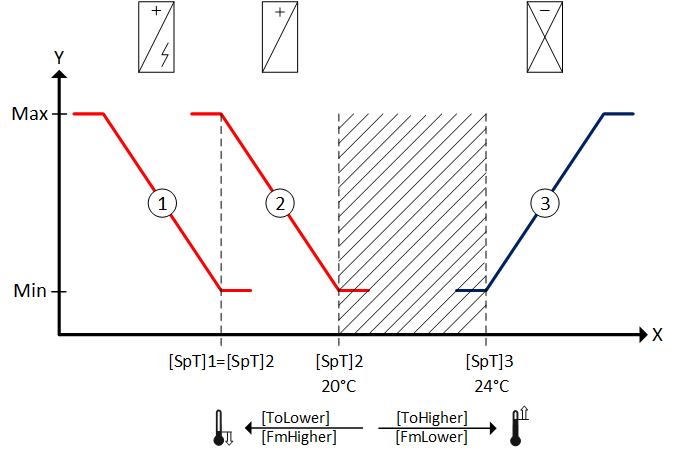
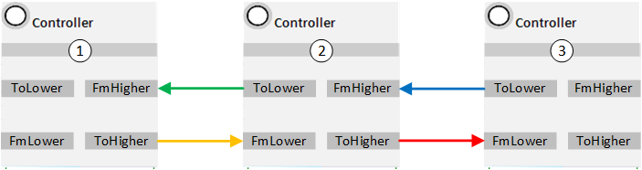
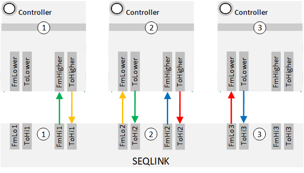

Sequencing
The various plant components, i.e. heating and cooling aggregates must be controlled in the proper sequence. Their controllers are switched in sequence.
In other words, an electric heating coil can only be switched on when the hot water heating coil is no longer able to provide sufficient power or is defective.
The following example illustrates the sequence diagram for:
① Electric heating coil
② Hot water heating coil
③ Cooling coil

Neutral zone
Heating and cooling is switched off as long as the temperature actual value X is located in the neutral zone (shaded area). The neutral zone is defined by the two temperature setpoints [SpT]2 and [SpT]3.
Heating
The hot water heating coil is switched on if the temperature actual value X drops below setpoint [SpT]2. It continuously increases power until the setpoint is once again reached.
The electric heating coil is also switched on if the desired setpoint [SpT]2 is still not achieved even though the hot water heating coil is operated at maximum power.
The setpoint of the electric heating coil [SpT]1 is the same as the setpoint for the hot water heating coil [SpT]2.
The electric heating coil increases its power until the setpoint is achieved again.
Cooling
The cooing coil is switched on if the temperature actual value X increases above setpoint [SpT]3. The cooling coil continuously increases power until the setpoint is once again reached.
Sequencing occurs by interconnecting inputs [FmHigher] and [FmLower] and outputs [ToHigher] and [ToLower] of the individual controllers CTR.
They are interconnected as per their switch-on sequences in the sequence diagram (lower to higher).
Sequence elements are defined as lower that become active at lower temperature actual values for room temperature or supply air temperature, in other words, typically the controller for heating, energy recovery, or humidification.
Sequence elements are defined as higher that are active at higher actual temperature values for room temperature or supply air temperature, in other words, typically the controller for cooling or dehumidification.
The controller inputs and outputs can be either directly linked or via function block SEQLINK sequence linker.
Direct connection:

Connection via SEQLINK:

Up to eight controllers can be switched in sequence via SEQLINK.
A sequence linker can delete individual sequence elements without the need to interconnect anew the other sequence elements.
Note the following items when creating sequences:
- The lowest controller in the sequence receives number 1; the highest number n.
- The individual sequence cannot overlap. A maximum of one element can be active at a time.
- Modulating control over multiple controllers in the sequence is ensured if the setpoints of the controllers match, e.g. [SpT]1 = [SpT]2 in the sequence diagram.
- All controller types can be used in the sequence: P, PI, PID, PD or 2-position controllers. The setpoints are set on the individual controllers.